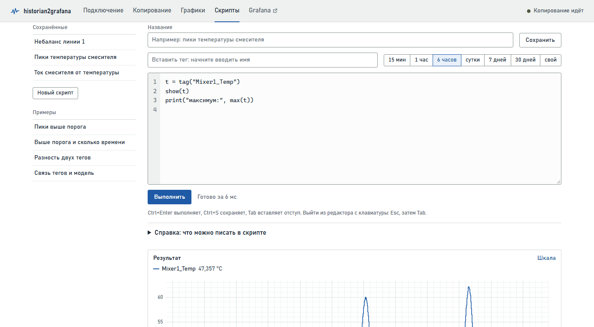
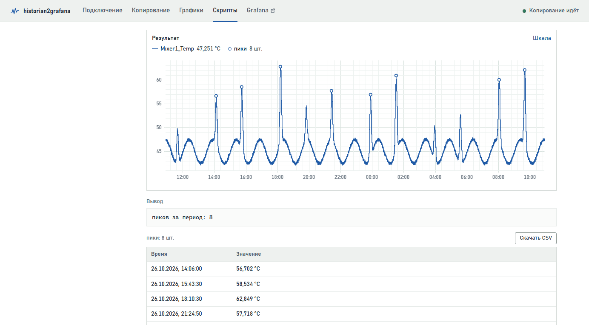
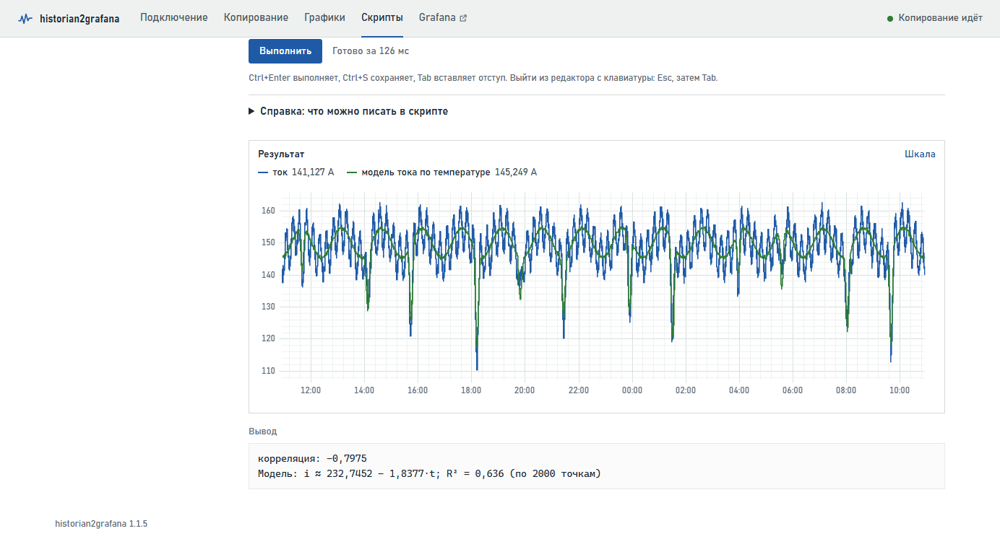
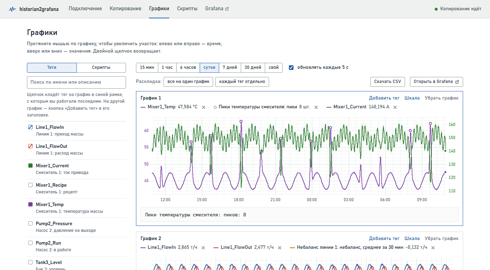
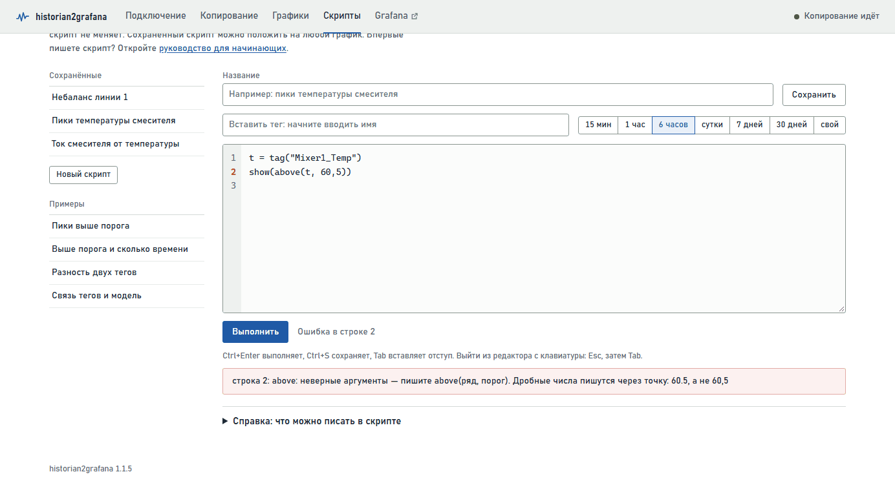

Скрипты: руководство для начинающих
Скрипт — это несколько строк текста, в которых вы говорите приложению, что сделать со значениями тегов: показать, отобрать или посчитать. Руководство написано для тех, кто никогда не программировал. Если читать по порядку и пробовать примеры, за полчаса можно научиться писать скрипты для повседневных задач. В конце есть разбор ошибок и шпаргалка на одну страницу.
1. Что такое скрипт и зачем он нужен
Страница «Графики» показывает значения тегов как есть. А вопросы на производстве обычно другие:
- «покажи только пики температуры»;
- «сколько времени температура была выше 60 градусов»;
- «насколько расход отстаёт от прихода»;
- «какая была температура, пока работал насос»;
- «зависит ли ток привода от температуры массы».
На такие вопросы и отвечает скрипт. Вы пишете, что нужно, нажимаете «Выполнить» и получаете график, числа и таблицу.
Работает скрипт с данными, которые уже скопированы в базу приложения, за выбранный вами период. Испортить он ничего не может: он только читает, и ни историк, ни база от него не меняются. Худшее, что может случиться, — сообщение об ошибке. Готовый скрипт можно сохранить и потом класть его результат на графики рядом с тегами.
2. Где писать скрипты
Откройте в приложении страницу «Скрипты», это вкладка в шапке.

| Часть страницы | Для чего |
|---|---|
| Сохранённые (слева) | Ваши сохранённые скрипты. Щелчок открывает скрипт и сразу его выполняет |
| Новый скрипт | Начать с чистого листа |
| Примеры (слева) | Готовые скрипты, в них сразу подставляется один из ваших тегов |
| Название, «Сохранить», «Удалить» | Под этим названием скрипт появится в списке и на графиках |
| Вставить тег | Поиск тега по имени или описанию. Выбранный тег вставляется в текст скрипта там, где стоит курсор |
| Кнопки периода | За какой период брать значения: от 15 минут до 30 дней или свой. Период общий со страницей «Графики» |
| Редактор | Здесь пишется скрипт. Слева номера строк, по ним удобно искать ошибки |
| «Выполнить» (или Ctrl+Enter) | Выполнить скрипт и показать результат |
| Результат | Под редактором: график, блок «Вывод» с числами и таблицы найденных событий |
| Справка | Под кнопкой «Выполнить», все функции с короткими пояснениями |
Это руководство открывается и прямо из приложения, ссылкой «руководство для начинающих» на странице «Скрипты».
3. Первый скрипт за две минуты
- Откройте страницу «Скрипты» и нажмите «Новый скрипт». В редакторе появятся строки, начинающиеся со знака
#. Это подсказки, приложение их пропускает, так что их можно стереть. - Поставьте курсор на пустую строку. В поле «Вставить тег» начните вводить имя или описание тега, например «темп», и выберите тег в списке. В редакторе появится
tag("Mixer1_Temp"). - Допишите в начало этой строки
t =, чтобы получилосьt = tag("Mixer1_Temp"). - На следующей строке напишите
show(t). - Выберите период, например «6 часов», и нажмите «Выполнить».
t = tag("Mixer1_Temp")
show(t)
Под редактором появится график температуры. Первая строка взяла значения тега за период и запомнила их под коротким именем t, вторая показала t на графике.
Теперь добавьте третью строку и снова нажмите «Выполнить»:
print("максимум:", max(t))
Под графиком, в блоке «Вывод», появится наибольшее значение температуры за период. Вот и весь первый скрипт: три строки, и уже есть ответ на вопрос.
Mixer1_Temp (температура массы, °C), Mixer1_Current (ток привода, A), Pump2_Run (насос: 1 значит работает, 0 стоит), Line1_FlowIn и Line1_FlowOut (приход и расход массы, т/ч). Подставляйте вместо них свои, проще всего через поле «Вставить тег».4. Пять правил записи
Правило 1. Одна строка — одно действие
Приложение выполняет строки по очереди, сверху вниз. Поэтому сначала берём тег, а потом что-то с ним делаем. Каждая строка начинается с самого начала, без пробелов впереди.
Правило 2. Имя = значение
Знак = запоминает результат под именем, чтобы не писать одно и то же много раз. Слева стоит имя, справа то, что нужно запомнить:
t = tag("Mixer1_Temp") # t — значения температуры
p = peaks(t, level=60) # p — пики этой температуры
температура = tag("Mixer1_Temp") # можно и по-русски
Имя состоит из букв (латинских или русских), цифр и знака _ и начинается с буквы: t, temp2, расход_массы. Большие и маленькие буквы различаются, t и T для приложения разные имена. Называть имя так же, как функцию (tag, show, max и другие из справочника), нельзя. И пользоваться именем можно только в строках ниже той, где оно задано.
Правило 3. Функция — это команда со скобками
Всю работу в скрипте делают функции: tag(…), show(…), peaks(…). После имени функции идут круглые скобки, а в них через запятую то, что ей нужно. Это называется аргументами:
show(t) # один аргумент show(t, "температура") # два аргумента: что и с какой подписью peaks(t, level=60, distance="10m") # аргументы с именами
Аргументы без имени пишутся по порядку, как в справочнике: в above(t, 60) сначала ряд, потом порог. Аргументы с именем, вроде level=60, ставятся после них в любом порядке, и их можно пропускать. Функции вкладываются друг в друга: count(peaks(t)) даёт число пиков.
Правило 4. Текст в кавычках, дробные числа через точку
Имена тегов, интервалы времени и подписи пишутся в прямых двойных кавычках: "Mixer1_Temp", "10m", "пики". Кавычки-ёлочки не подойдут. Обычно они появляются, когда текст скопирован из Word.
Дробные числа пишутся через точку: 60.5. Запятая в скрипте разделяет аргументы, поэтому above(t, 60,5) приложение поймёт как три аргумента и сообщит об ошибке.
Правило 5. После # идёт комментарий
Всё, что стоит после знака #, приложение пропускает. Там удобно писать пояснения для себя и коллег:
show(t) # температура за выбранный период
peaks(t, level = 60) и peaks(t,level=60) означают одно и то же. Пустые строки между командами тоже не мешают.5. Ряд, число и текст
В скриптах встречаются три вида значений:
| Вид | Что это | Пример и как увидеть |
|---|---|---|
| Ряд | Значения во времени: тег или то, что из него получено (отобранные значения, пики, разность двух тегов) | tag("Mixer1_Temp"), above(t, 60). На график выводится через show(…) |
| Число | Одно значение за весь период: максимум, среднее, количество | max(t), mean(t), 60. В вывод попадает через print(…) |
| Текст | Подпись, имя тега, интервал времени | "пики", "10m", всегда в кавычках |
show и print: как увидеть результат
show(ряд, "подпись") показывает ряд на графике под редактором. Подпись можно не писать, тогда в легенде будет имя тега или само выражение.
print("подпись:", число) выводит строку в блок «Вывод». В скобках через запятую можно перечислить сколько угодно текстов и чисел.
Вывод пишет числа по-русски: с запятой, например 3,4132. В самом скрипте дробная часть отделяется точкой, поэтому число из вывода, перенесённое в скрипт, нужно поправить: 3.4132. Знак минус «−» из вывода переносить можно, приложение его понимает.
Строка без =, show и print тоже показывает результат: ряд на графике, число в выводе. Это удобно для быстрой проверки. Напишите max(t), нажмите «Выполнить», и всё.
Арифметика
С рядами и числами работают обычные действия: +, -, *, / и скобки.
a = tag("Line1_FlowIn")
b = tag("Line1_FlowOut")
show(a - b, "разность прихода и расхода")
show(a * 1000 / 3600, "приход, кг/с")
Значения двух тегов обычно записаны в разные моменты, но сопоставлять их вручную не нужно. Приложение сделает это само: значение тега держится до следующего изменения, ровно так, как его записал историк.
6. Готовые рецепты
Каждый рецепт — законченный скрипт. Скопируйте его, замените имя тега на своё и выполните. Под кодом объяснено, что делает каждая строка.
6.1 Несколько тегов вместе
t = tag("Mixer1_Temp")
i = tag("Mixer1_Current")
show(t, "температура")
show(i, "ток привода")
Оба тега окажутся на одном графике. Единицы у них разные (°C и A), поэтому шкал будет две, слева и справа, каждая цветом своего ряда.
6.2 Пики
t = tag("Mixer1_Temp")
p = peaks(t, level=55, distance="30m")
show(t)
show(p, "пики")
print("пиков за период:", count(p))
peaks(t, …) ищет пики, то есть точки, где значение выше соседних. level=55 оставляет только пики не ниже 55, без него найдутся все, вплоть до мелких колебаний. distance="30m" значит «не чаще одного пика за 30 минут»: из близких пиков остаётся самый высокий. count(p) считает, сколько пиков нашлось.

Под графиком появится таблица со временем и значением каждого пика. Кнопка «Скачать CSV» сохраняет её для Excel.
level=quantile(t, 0.95) даёт уровень, выше которого лежат только 5 % значений. Пригодится и аргумент prominence=3: тогда пик должен возвышаться над соседними впадинами хотя бы на 3 единицы, и мелкая «рябь» отбрасывается. Впадины, то есть минимумы, ищет valleys(…).6.3 Значения выше порога и сколько времени
t = tag("Mixer1_Temp")
show(t)
show(const(55, t), "порог 55")
show(above(t, 55), "выше 55")
print("выше 55, часов:", duration(t > 55))
print("выше 55, минут:", duration(t > 55, "min"))
const(55, t) рисует горизонтальную линию на уровне 55 на той же шкале, что и t. above(t, 55) оставляет только значения выше 55, в остальное время линия прерывается. Есть и похожие функции: below(t, 20) для значений ниже порога и between(t, 20, 55) для диапазона.
t > 55 — это условие «температура выше 55» (про условия подробно в разделе 7). duration(условие) считает, сколько времени оно выполнялось: по умолчанию в часах, а с "min" в минутах.
6.4 Моменты, когда значение перешло порог
t = tag("Mixer1_Temp")
up = crossings(t, 55, "up")
show(t)
show(up, "превышение 55")
print("сколько раз превышали 55:", count(up))
crossings(t, 55, "up") находит моменты, когда значение поднялось выше 55. Если вместо "up" написать "down", найдутся моменты, когда оно опустилось ниже, а "both" найдёт и те, и другие. На графике моменты будут кружками, а под графиком таблицей.
6.5 Значения одного тега, пока работает другой
t = tag("Mixer1_Temp")
run = tag("Pump2_Run")
show(where(t, run == 1), "температура при работе насоса")
print("средняя при работе насоса:", mean(where(t, run == 1)))
print("насос работал, часов:", duration(run == 1))
run == 1 означает «насос работает». Обратите внимание на два знака равенства: так записывается сравнение, а один знак запоминает имя. where(t, условие) оставляет температуру только там, где условие выполняется, а mean(…) считает среднее за период.
6.6 Разность двух тегов (приход и расход)
a = tag("Line1_FlowIn")
b = tag("Line1_FlowOut")
d = a - b
show(d, "разность")
show(smooth(d, "30m"), "среднее за 30 минут")
print("средняя разность, т/ч:", round(mean(d), 3))
a - b даёт разность в каждый момент времени. smooth(d, "30m") её сглаживает: в каждой точке берётся среднее за предыдущие 30 минут, шум уходит, и видна общая тенденция. round(число, 3) округляет до трёх знаков после запятой.
6.7 Как быстро меняется значение
t = tag("Mixer1_Temp")
v = rate(smooth(t, "5m"), "1m")
show(v, "скорость, °C в минуту")
print("самый быстрый рост, °C/мин:", max(v))
rate(ряд, "1m") показывает, на сколько ряд меняется за минуту (с "1h" за час). Сигнал здесь сначала сглажен, иначе скорость будет прыгать от каждого шума.
6.8 Сводка за период
t = tag("Mixer1_Temp")
print("минимум:", min(t))
print("максимум:", max(t))
print("среднее:", round(mean(t), 1))
print("разброс:", round(std(t), 2))
print("значений за период:", count(t))
Все числа появятся в блоке «Вывод». std(t) — разброс, или среднеквадратичное отклонение: чем он больше, тем сильнее колеблется значение.
6.9 Связь двух тегов
i = tag("Mixer1_Current")
t = tag("Mixer1_Temp")
print("корреляция:", corr(i, t))
show(i, "ток")
show(fit(i, t), "модель тока по температуре")

Корреляция corr(a, b) — число от −1 до 1. Оно показывает, насколько согласованно меняются два тега. Если оно около 1, теги растут и падают вместе. Около −1, когда один растёт, другой падает. Здесь как раз так: горячая масса жиже, и приводу её мешать легче. Около 0 связи не видно.
Модель fit(y, x) подбирает формулу, как y зависит от x, и печатает её, например: «Модель: i ≈ 232,2 − 1,83·t; R² = 0,61». Читается это так: если температура выросла на 1 °C, ток упал примерно на 1,8 А. R² показывает, какую долю колебаний y объясняет формула: 1 значит всю, 0 никакую, а 0,61 чуть больше половины. На график ложится расчётный ряд, то есть каким ток «должен быть» по формуле, и его удобно сравнить с фактическим. В модель можно взять до пяти тегов: fit(y, x1, x2, x3).
6.10 Связь с запаздыванием
a = tag("Line1_FlowIn")
b = tag("Line1_FlowOut")
print("без сдвига:", corr(a, b))
print("приход на 10 минут позже:", corr(shift(a, "10m"), b))
show(shift(a, "10m"), "приход, сдвинут на 10 минут")
show(b, "расход")
shift(ряд, "10m") сдвигает ряд на 10 минут позже, а "-10m" на 10 минут раньше. Если со сдвигом корреляция заметно выше, значит, расход повторяет приход примерно через 10 минут. Попробуйте несколько сдвигов и найдите тот, при котором корреляция больше всего. Так можно оценить, сколько масса идёт по линии.
7. Условия: сравнения, «и», «или»
Если сравнить ряд с числом или с другим рядом, получится условие. Это тоже ряд, только из единиц (условие выполняется) и нулей (не выполняется). Условия нужны функциям where и duration.
| Запись | Значит | Пример |
|---|---|---|
> | больше | t > 55 |
< | меньше | t < 40 |
>= | больше или равно | t >= 55 |
<= | меньше или равно | t <= 40 |
== | равно (два знака!) | run == 1 |
!= | не равно | run != 1 |
and | и: выполняются оба условия | t > 55 and run == 1 |
or | или: выполняется хотя бы одно | t > 60 or t < 40 |
not | не: условие не выполняется | not run == 1 |
t = tag("Mixer1_Temp")
run = tag("Pump2_Run")
print("горячо и насос работает, часов:", duration(t > 55 and run == 1))
show(where(t, t > 45 and t < 55), "от 45 до 55")
= запоминает имя (t = …), два знака == сравнивают (run == 1). На этом спотыкаются чаще всего, так что, если скрипт ведёт себя странно, первым делом проверьте знаки равенства.8. Интервалы времени
Окно сглаживания, расстояние между пиками или сдвиг пишутся текстом в кавычках:
| Запись | Значит |
|---|---|
"30s" | 30 секунд |
"5m" или "5мин" | 5 минут |
"2h" или "2ч" | 2 часа |
"1d" или "1сут" | сутки |
"1.5h" | полтора часа |
"-10m" (только в shift) | на 10 минут раньше |
Число без кавычек приложение считает в секундах, так что smooth(t, 300) и smooth(t, "5m") дают одно и то же. Но с буквами нагляднее.
9. Справочник функций
В таблицах «ряд» означает значения тега или то, что из них получено, а «условие» — сравнение вроде t > 55. Тот же список с короткими пояснениями есть на странице «Скрипты», в разделе «Справка».
Взять данные и показать результат
| Функция | Что делает | Пример |
|---|---|---|
tag("имя") | Значения тега за выбранный период | t = tag("Mixer1_Temp") |
show(ряд, "подпись") | Показывает ряд на графике | show(t, "температура") |
print(…) | Выводит тексты и числа в блок «Вывод» | print("максимум:", max(t)) |
Отобрать значения
| Функция | Что делает | Пример |
|---|---|---|
above(ряд, порог) | Оставляет только значения выше порога | above(t, 55) |
below(ряд, порог) | Оставляет только значения ниже порога | below(t, 40) |
between(ряд, от, до) | Оставляет только значения в диапазоне | between(t, 45, 55) |
where(ряд, условие) | Оставляет значения, пока условие выполняется | where(t, run == 1) |
Найти события
| Функция | Что делает | Пример |
|---|---|---|
peaks(ряд, level=…, distance=…, prominence=…) | Находит пики (максимумы) | peaks(t, level=55, distance="30m") |
valleys(ряд, level=…, distance=…, prominence=…) | Находит впадины (минимумы). Здесь level означает «не выше уровня» | valleys(t, level=40) |
crossings(ряд, порог, "up") | Находит моменты перехода порога: "up", "down" или "both" | crossings(t, 55, "both") |
Преобразовать ряд
| Функция | Что делает | Пример |
|---|---|---|
smooth(ряд, "5m") | Сглаживает: среднее за окно | smooth(t, "10m") |
rate(ряд, "1m") | Скорость изменения за минуту (час и т. д.) | rate(t, "1h") |
shift(ряд, "10m") | Сдвигает по времени | shift(a, "-5m") |
resample(ряд, "1h", "mean") | Приводит к ровному шагу: "mean" для среднего, а также "min", "max", "last" | resample(t, "1h", "max"): максимум за каждый час |
const(число, ряд) | Горизонтальная линия на шкале ряда | const(55, t) |
abs(…), round(…, 2) | Модуль и округление | abs(a - b), round(mean(t), 1) |
Посчитать число за период
| Функция | Что даёт | Пример |
|---|---|---|
mean(ряд) | Среднее, с учётом того, сколько времени держалось каждое значение | mean(t) |
min(ряд), max(ряд) | Наименьшее и наибольшее значение | max(t) |
std(ряд) | Разброс значений | std(t) |
quantile(ряд, 0.95) | Уровень, выше которого только 5 % значений | quantile(t, 0.9) |
count(ряд) | Сколько значений (или событий) | count(peaks(t)) |
sum(ряд) | Сумма значений | sum(p) |
last(ряд) | Последнее значение | last(t) |
duration(условие, "h") | Сколько времени условие выполнялось: "h" в часах, "min" в минутах, "s" в секундах | duration(t > 55, "min") |
Связь тегов
| Функция | Что даёт | Пример |
|---|---|---|
corr(ряд1, ряд2) | Корреляцию, от −1 до 1 | corr(i, t) |
fit(y, x1, x2, …) | Линейную модель: печатает формулу и R² и возвращает расчётный ряд | show(fit(i, t), "модель") |
10. Результат скрипта на графиках
- На странице «Скрипты» введите название и нажмите «Сохранить».
- Откройте страницу «Графики» и слева выберите вкладку «Скрипты».
- Щёлкните по своему скрипту, и его результат ляжет на график рядом с тегами. Пики рисуются кружками на линии своего тега, а текст из
printвыводится под графиком.

Период скрипт берёт с графика. Если включено автообновление, результат пересчитывается раз в 30 секунд. Изменили и сохранили скрипт — графики покажут уже новый результат.
11. Ошибки и как их исправить
Если в скрипте ошибка, под редактором появится красная рамка с сообщением, а номер строки с ошибкой слева станет красным. Исправьте строку и снова нажмите «Выполнить». Сообщения написаны так, чтобы по ним было понятно, что поправить, и часто в них уже есть подсказка.

| Начало сообщения | Что случилось и что делать |
|---|---|
| не закрыта кавычка | У текста нет второй кавычки: tag("Mixer1_Temp) надо исправить на tag("Mixer1_Temp") |
| не закрыта скобка / лишняя закрывающая скобка | Посчитайте скобки в строке: сколько открыто, столько должно быть и закрыто |
| пропущена запятая между аргументами | peaks(t level=60) → peaks(t, level=60) |
| … Дробные числа пишутся через точку | 60,5 → 60.5 |
| кавычки пишутся прямые | Текст скопирован из Word. Замените «…» на "…" |
| вместо минуса стоит тире | Замените «–» на обычный минус - |
| число слито с буквами | Интервал написан без кавычек: smooth(t, 5m) → smooth(t, "5m") |
| имя «…» не задано | Имя не задано в строках выше, в нём опечатка или перепутаны большие и маленькие буквы. Похожее имя приложение подскажет само |
| … Если это имя тега — пишите tag("…") | Имя тега написано без tag и кавычек: show(Mixer1_Temp) → show(tag("Mixer1_Temp")) |
| нет функции «…» — может быть, …? | Опечатка в названии функции: peak → peaks |
| тега «…» нет в базе приложения | В имени тега ошибка, или тег не копируется. Вставляйте имя через поле «Вставить тег». Список тегов есть на странице «Копирование» |
| тег «…» строковый | Текстовые теги (рецепт, номер партии) скрипты не считают |
| …: первый аргумент — ряд | Перепутан порядок: above(55, t) → above(t, 55) |
| …: неверные аргументы — пишите … | Лишний или пропущенный аргумент. Правильная запись приведена в самом сообщении |
| лишний отступ в начале строки | Уберите пробелы в начале строки |
| условий if нет / циклов в скриптах нет | Эти конструкции здесь не нужны. Отбирайте функциями where и above, считайте через duration и count |
| обращения через точку нет | Пишите mean(t), а не t.mean() |
| … больше 500 000 значений — сократите период | У тега очень частые значения, выберите период короче |
| выполняется дольше 30 с | Сократите период или упростите скрипт |
«Скрипт выполнен, но ничего не показал» — не ошибка. Просто в скрипте нет ни show, ни print, добавьте их.
12. Что скрипты не умеют
Менять данные они не могут: скрипт только читает базу приложения и ничего не пишет ни в неё, ни в историк. Брать данные, которых в базе нет, тоже не могут, то есть работают только с копируемыми тегами и только за скопированный период. Текстовые теги, вроде рецепта или номера партии, скрипты не считают.
Циклов, условий if, своих функций и импорта библиотек в языке нет. Это сделано нарочно, чтобы язык оставался простым и безопасным, а всё нужное делают функции из справочника.
У одного запуска есть пределы: до 20 разных тегов, до 500 000 значений одного тега, до 30 секунд расчёта и до 20 рядов на графике.
Если вы знаете Python: синтаксис тот же (присваивания, арифметика, сравнения, вызовы функций), но выполняет его не интерпретатор Python, а само приложение, и только разрешённые конструкции.
13. Шпаргалка
# взять тег и показать
t = tag("Mixer1_Temp")
show(t, "температура")
# отбор
above(t, 55) below(t, 40) between(t, 45, 55) where(t, run == 1)
# события
peaks(t, level=55, distance="30m") valleys(t, level=40) crossings(t, 55, "up")
# преобразования
smooth(t, "5m") rate(t, "1m") shift(t, "10m") resample(t, "1h", "max") const(55, t)
# числа за период (выводить через print)
mean(t) min(t) max(t) std(t) quantile(t, 0.95) count(p) duration(t > 55, "min")
# связь тегов
corr(a, b) fit(y, x1, x2)
# условия: > < >= <= == != and or not
# интервалы: "30s" "5m" "2h" "1d"
# текст в прямых кавычках "…", дробные числа через точку 60.5, комментарий после #